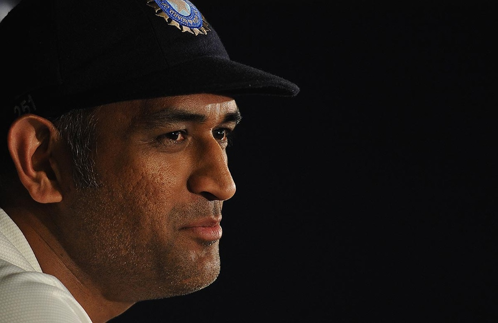

M.S. Dhoni
Mahendra Singh Dhoni (born 7 July 1981),
commonly known as MS Dhoni and Mahi,
is a cricket player and was the
former captain of the Indian cricket team.
Dhoni is a right-handed batsman.
He is known as the greatest captain
of all time, having achieved more
success than any other captain in
the history of cricket.
Dhoni has also been given many awards,
such as the ICC ODI Player of the
Year award in 2008 and 2009 (the first
Indian player to achieve this),
the Rajiv Gandhi Khel Ratna award
in 2007 and the Padma Shri, India's
fourth-highest civilian honour, in 2009.